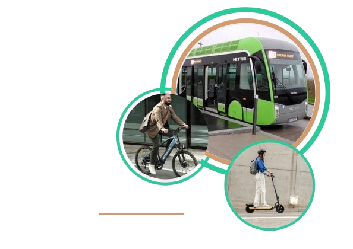
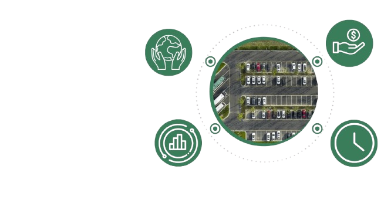
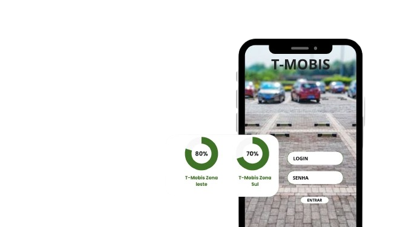
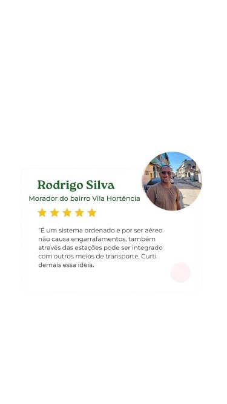
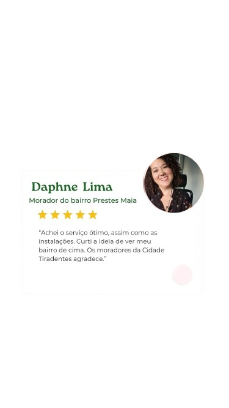
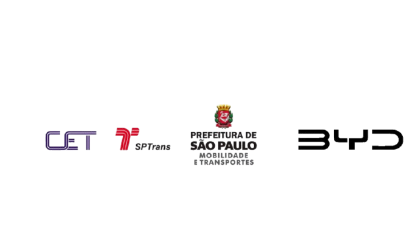

SE DEPENDER DA GENTE
O CÉU CONTINUARÁ AZUL
CONHEÇA
A T-MOBIS
Nosso Objetivo é criar soluções que minimizem os impactos ambientais, que promovam a justiça
social e melhorem a qualidade de vida nas cidades.
° Transporte Público Eficiente e Acessível.
° Uso de Ernegias Renováveis.
° Planejamento Urbano Integrado.


Conheça a plataforma digital
da T-Mobis: O aplicativo Mobis+
Independente do seu destino, a Mobis+ traz para a palma da sua mão toda a facilidade que precisa para ganhar tempo no seu dia a dia.
Com o aplicativo você consegue ver as vagas disponíveis dos estacionamentos.

T-MOBIS
T-MOBIS
T-MOBIS
T-MOBIS
T-MOBIS
T-MOBIS
REGIÕES EXTREMAS DE SÃO PAULO
Chegou o Teleférico na CIDADE TIRADENTES!
O transporte sustentável ideal que atende bem ás necessidades da população
e ajuda no meio ambiente


Nossos Parceiros
